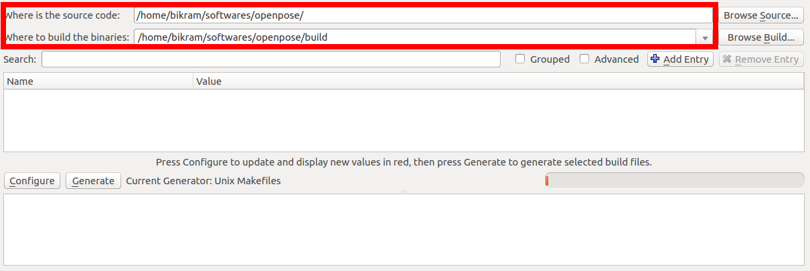
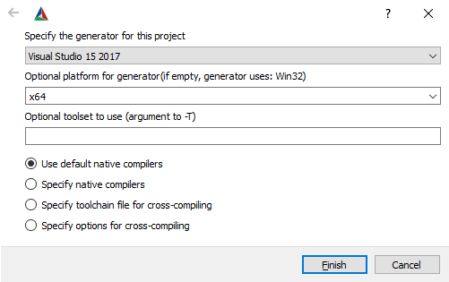
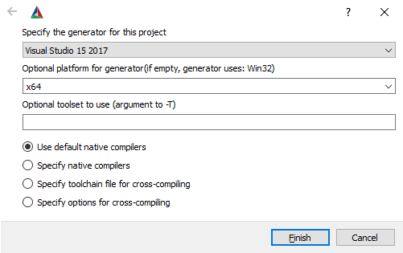
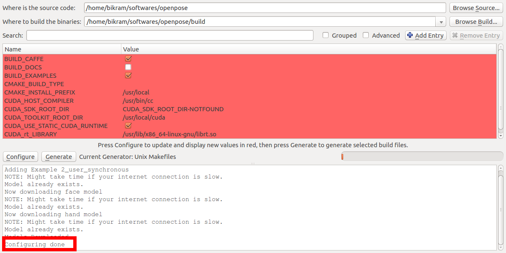

|
OpenPose
1.7.0
The first real-time multi-person system to jointly detect human body, hand, facial, and foot keypoints
|
|
OpenPose
1.7.0
The first real-time multi-person system to jointly detect human body, hand, facial, and foot keypoints
|
nvidia-smi command checks the available GPU memory in Ubuntu).--net_resolution and/or scale_number or less resources by reducing the net resolution and/or using the MPI and MPI_4 models.If you just want to use OpenPose without compiling or writing any code, simply use the latest portable version of OpenPose for Windows.
Instructions.txt file inside the downloaded zip file to download the models required by OpenPose (about 500 Mb).Note: If you are using the GPU-accelerated version and are seeing Cuda check failed (3 vs. 0): initialization error when running OpenPose, you can fix it by doing one of these:
The instructions in the following subsections describe the steps to build OpenPose using CMake-GUI. These instructions are only recommended if you plan to modify the OpenPose code or integrate it with another library or project. You can stop reading this document if you just wanted to run OpenPose on Windows without compiling or modifying any code.
Any problem installing OpenPose while following this guidelines? Check doc/05_faq.md and/or check existing GitHub issues. If you don't find your issue, post a new one. We will not respond to duplicated issues, as well as GitHub issues about Caffe, OpenCV or CUDA installation errors, as well as issues that do not fill all the information that the GitHub template asks for.
Make sure to download and install the prerequisites for your particular operating system.
The first step is to clone the OpenPose repository.
build) where the Makefile files (Ubuntu) or Visual Studio solution (Windows) will be generated. If build does not exist, it will ask you whether to create it. Press Yes.  
Configure button, keep the generator in Unix Makefiles (Ubuntu) or set it to your 64-bit Visual Studio version (Windows), and press Finish. Note for Windows users: CMake-GUI has changed their design after version 14. For versions older than 14, you usually select Visual Studio XX 20XX Win64 as the generator (X depends on your VS version), while the Optional toolset to use must be empty. However, new CMake versions require you to select only the VS version as the generator, e.g., Visual Studio 16 2019, and then you must manually choose x64 for the Optional platform for generator. See the following images as example. 
 

BUILD_PYTHON flag and click Configure again.GPU_MODE flag to the proper value and click Configure again:GPU_MODE back to CPU_ONLY.GPU_MODE to CPU_ONLY.GPU_MODE flag to CPU_ONLY (easier to install but slower runtime) or OPENCL (GPU-accelerated, it is harder to install but provides a faster runtime speed). For more details on OpenCV support, see doc/1_prerequisites.md and OpenCL Version.GPU_MODE flag to CPU_ONLY.Configuring done text will appear in the bottom box in the last line. Otherwise, some red text will appear in that same bottom box.  
Generate button and proceed to Compilation. You can now close CMake.Note: For other optional and custom options (e.g., using your custom Caffe or OpenCV versions), see the Additional Settings (Optional) documentation.
Run the following commands in your terminal.
Run the following commands in your terminal:
Advanced tip: Mac provides both logicalcpu and physicalcpu, but we want the logical number for maximum speed.
If the default compilation fails with Caffe errors, install Caffe separately and set BUILD_CAFFE to false in the CMake config. Steps:
rm -rf build; mkdir build; cd build.brew uninstall caffe to remove the version of Caffe previously installed via cmake.brew install caffe to install Caffe separately.cmake-gui and make the following adjustments to the cmake config:BUILD_CAFFE set to false.Caffe_INCLUDE_DIRS set to /usr/local/include/caffe.Caffe_LIBS set to /usr/local/lib/libcaffe.dylib.Configure and Generate from CMake GUI.If you face an OpenCV error during compiling time similar to ‘fatal error: 'opencv2/highgui/highgui.hpp’ file not found`, please apply the following patch (this error has been reported in the latest OSX 10.14):
In order to build the project, select and run only one of the 2 following alternatives.
Open Project in CMake (or alternatively build/OpenPose.sln). Then, set the configuration from Debug to Release.F7 (or Build menu and click on Build Solution).F5 (Run), you must also Build Solution for the Python bindings to be generated.F5) to run the OpenPose demo with the default settings on the webcam.NOTE: To set GPU_MODE flag to CPU_ONLY when building the tool via cli, append -D GPU_MODE:STRINGS=CPU_ONLY to the cmake command.
VERY IMPORTANT NOTE: In order to use OpenPose outside Visual Studio, and assuming you have not unchecked the BUILD_BIN_FOLDER flag in CMake, copy all DLLs from {build_directory}/bin into the folder where the generated openpose.dll and *.exe demos are, e.g., {build_directory}x64/Release for the 64-bit release version.
If you are facing errors with these instructions, these are a set of alternative instructions created by the community:
We welcome users to send us their installation videos (e.g., sharing them as GitHub issue or doing a pull request) and we will post them here.
Check OpenPose was properly installed by running any demo example: doc/01_demo.md.
You can quickly add your custom code so that quick prototypes can be easily tested without having to create a whole new project just for it. See examples/user_code/README.md for more details.
If you do not want to use the Windows portable binaries nor compile it from source code, we add links to some community-based work based on OpenPose. Note: We do not support them, and we will remove new GitHub issues opened asking about them as well as block those users from posting again. If you face any issue, comment only in the GitHub issues links especified below, or ask the owner of them.
sudo apt-get install docker-ce. The other steps can be found here.docker pull exsidius/openpose - Guide.You can find a Live Demo of the OpenPose API at Tiyaro.ai. We do not officially support it, but a Tiyaro co-founder added this support in [2129]. Feel free to comment in that post to him if you have questions about it.

OpenPose can be easily uninstalled:
sudo make install (which we do not recommend), then run sudo make uninstall in build/.In order to update it or reinstall it:
Check the Additional Settings (Optional) documentation if you want to: